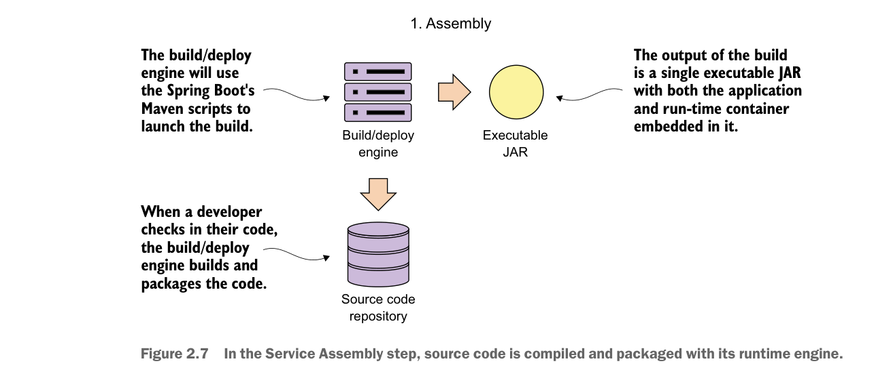

To accomplish this, a microservice needs to be packaged and installable as a single artifact with all of its dependencies defined within it. This artifact can then be deployed to any server with a Java JDK installed on it. These dependencies will also include the runtime engine (for example, an HTTP server or application container) that will host the microservice.
This process of consistently building, packaging, and deploying is the service assembly (step 1 in figure 2.6). Figure 2.7 shows additional details about the service assembly step.

In the Service Assembly step, source code is compiled and packaged with its runtime engine.
Fortunately, almost all Java microservice frameworks will include a runtime engine that can be packaged and deployed with the code. For instance, in the Spring Boot example in figure 2.7, you can use Maven and Spring Boot to build an executable Java jar file that has an embedded Tomcat engine built right into the JAR. In the following command-line example, you’re building the licensing service as an executable JAR and then starting the JAR file from the command-line:
mvn clean package && java –jar target/licensing-service-0.0.1-SNAPSHOT.jarFor certain operation teams, the concept of embedding a runtime environment right in the JAR file is a major shift in the way they think about deploying applications. In a traditional J2EE enterprise organization, an application is deployed to an application server. This model implies that the application server is an entity in and of itself and would often be managed by a team of system administrators who managed the configuration of the servers independently of the applications being deployed to them.
This separation of the application server configuration from the application introduces failure points in the deployment process, because in many organizations the